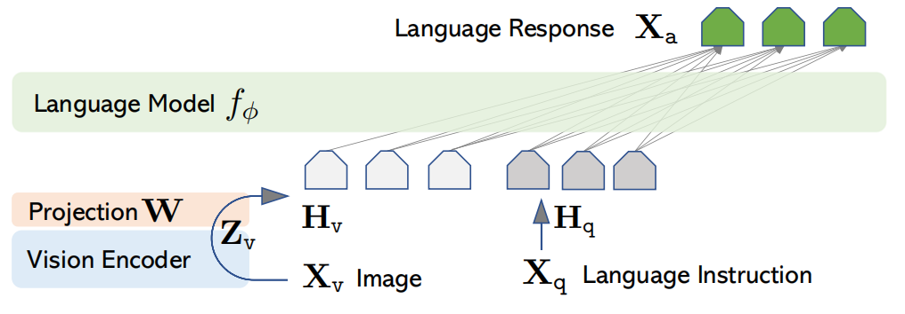
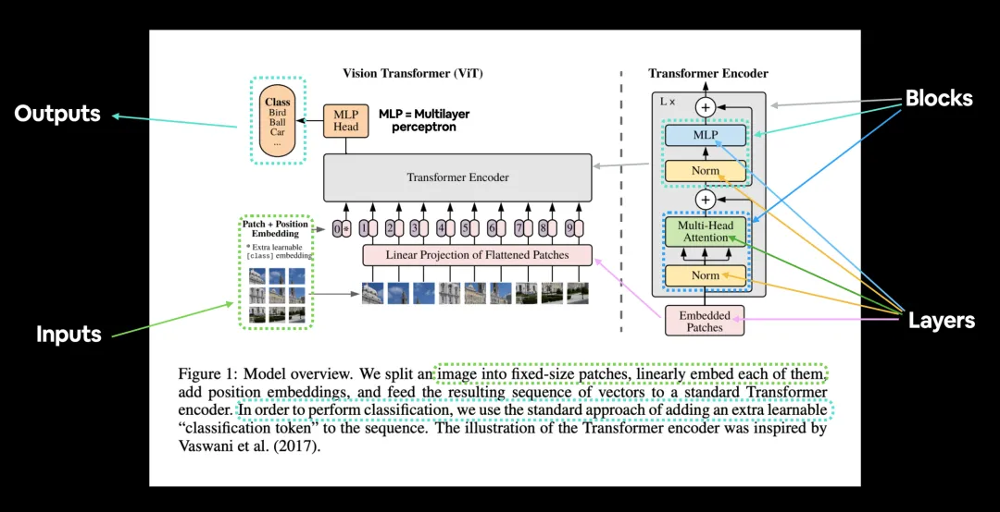
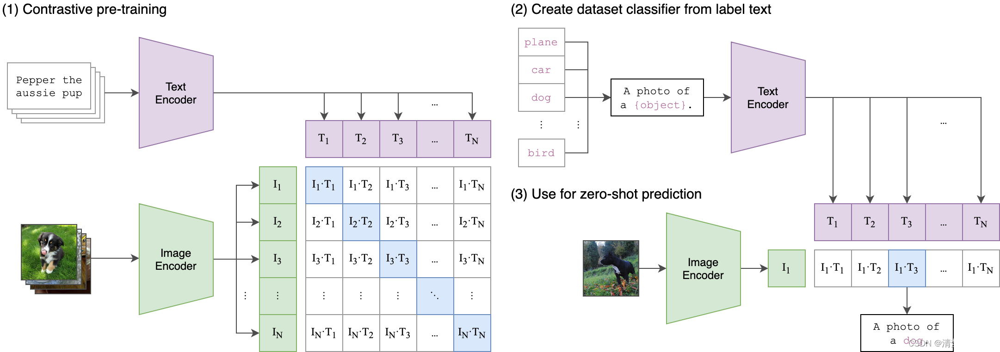
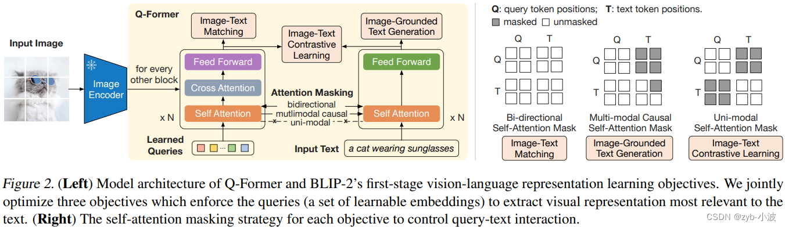
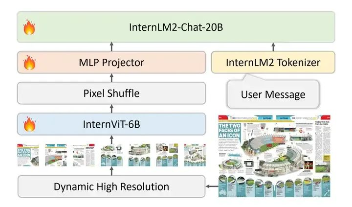
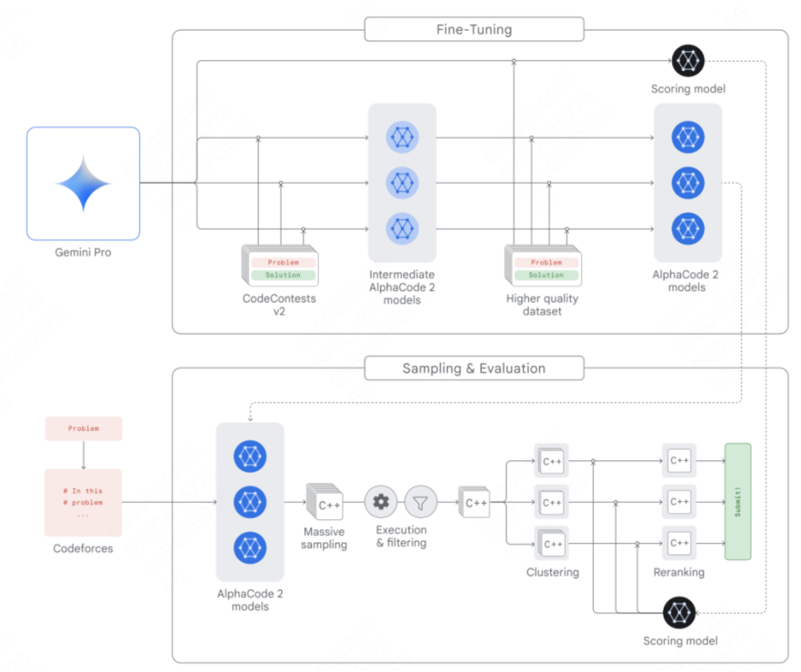
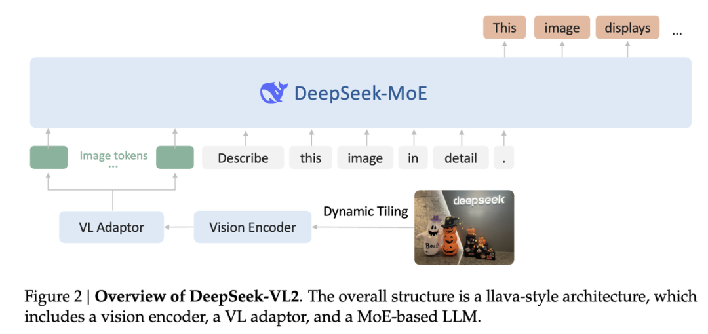

深度剖析视觉基础模型、模态适配器、训练策略与前沿进展
定义、核心价值与三要素架构
ViT、CLIP、SigLIP等技术演进
线性投影、MLP、Q-Former等对比分析
LLaMA、Qwen、InternLM系列发展
LLaVA、Gemini、GPT-4o等技术解析
两阶段、三阶段训练与对齐方法
多模态大语言模型（Multimodal Large Language Model, MLLM）是指能够同时处理和理解多种模态信息（如文本、图像、音频等）的深度学习模型。

图：LLaVA总体架构设计
处理图像输入，提取视觉特征
桥接视觉与语言表示空间
基于Transformer的语言理解
ViT将图像分割为固定大小的patch（通常为16×16），展平后作为序列输入到标准Transformer encoder中。每个patch通过线性投影转换为嵌入向量，并添加位置编码以保留空间信息。
"ViT的成功证明，仅使用注意力机制就能有效处理视觉数据，为后续多模态模型奠定了基础"

图：Vision Transformer架构流程
CLIP采用双塔结构：Image Encoder（ViT）和Text Encoder（Transformer）。通过大规模图文对数据进行对比学习训练。

图：CLIP对比学习架构
CLIP在海量数据上学习到的视觉-语言联合表示，使得图像和文本在同一个嵌入空间中，实现了跨模态的语义对齐。
无需特定任务的微调，CLIP就能在新类别识别和自然语言描述任务上取得良好效果，这种泛化能力正是MLLM所需要的。
LLaVA采用最简单的线性投影方法，将CLIP的视觉特征直接映射到LLM的输入维度。具体来说，将ViT输出的768维特征通过一个线性层投影到LLM的隐藏维度（如4096维）。
关键洞察：CLIP在4亿图文对上学到的语义表示已经足够丰富，简单的线性投影就能有效桥接视觉和语言空间。
图：LLaVA线性投影架构
LLaVA-1.5引入两层MLP结构：768 → 4096 → 4096 → 4096，相比单层线性投影增加了非线性变换能力。
Q-Former是可学习的查询token（learnable queries）模块，通过交叉注意力机制从视觉特征中提取信息。包含两个关键组件：
参数效率：约188M参数，但通过预训练显著提升效果

图：BLIP-2 Q-Former架构
InternVL采用动态切片策略，将高分辨率图像切分为多个tile（通常448x448），每个tile独立通过ViT编码，同时提供缩略图用于全局上下文理解。所有tile特征拼接后送入适配器。

图：动态切片处理高分辨率图像
Qwen2-VL通过2x2 pixel shuffle操作将相邻像素合并，使token数量降低4倍，同时引入MRoPE（多维度旋转位置编码）同时编码时间、高度、宽度三个维度。
不同于传统adapter只在输入层融合视觉信息，跨注意力机制在LLM的每一层都注入视觉信息，实现更深层次的模态交互。
| 适配器类型 | 参数量 | 计算复杂度 | 优势 | 劣势 | 代表模型 |
|---|---|---|---|---|---|
| 线性投影 | ~26K | 极低 | 简单高效，效果好 | 表达能力有限 | LLaVA |
| MLP投影 | ~100K | 低 | 增加非线性能力 | 参数量和计算略增 | LLaVA-1.5 |
| Q-Former | ~188M | 中 | 参数高效，预训练效果好 | 参数量较大 | BLIP-2 |
| Perceiver | 可变 | 中高 | 支持长序列，灵活性强 | 训练复杂度高 | Flamingo |
| 动态切片 | ~100M | 高 | 支持任意分辨率，细节保留好 | 边缘效应，实现复杂 | InternVL |
| 像素重排 | ~200M | 中高 | 原生高分辨率支持，效率高 | 可能损失空间细节 | Qwen2-VL |
| 跨注意力 | ~1B+ | 很高 | 深层融合，交互充分 | 计算量大，训练难 | CogVLM |
CLIP采用双塔架构，通过对比学习在海量图文对数据上训练，将图像和文本映射到同一个高维嵌入空间中。这种对齐不是简单的特征匹配，而是学习一种共享的语义表示空间。
使用InfoNCE（Noise Contrastive Estimation）损失函数：
L_i = -log[exp(sim(v_i,t_i)/τ) / Σ_j exp(sim(v_i,t_j)/τ)]
其中sim(v_i,t_i)是图像v_i和文本t_i的余弦相似度，τ是温度参数。正样本对为(image, matching_text)，负样本为batch内其他图像-文本对。
这种对比学习使得模型学到了一种通用的跨模态语义理解能力。由于CLIP在大规模数据上学到的表示具有强泛化性，因此可以直接用于各种多模态下游任务而无需大量任务特定数据。zero-shot能力的理论基础在于这种共享语义空间的建立。
CLIP：基于相似度对比
BLIP：caption生成
CoCa：结合两者优势
这背后有几个关键原因。首先，CLIP的视觉编码器已经在4亿高质量图文对上学到了极其丰富的语义表示。这些表示包含了从低级视觉特征到高级语义概念的完整层次结构。
类比word embedding到LLM也是线性映射就足够，说明好的预训练表示本身就具有强大的表达能力。但在few-shot和复杂任务场景下，更复杂的adapter确实会有优势。
现代AI系统中，基础模型的质量往往比复杂架构更重要。CLIP学到的通用视觉-语言对齐知识已经足够丰富，简单的线性变换就能有效桥接不同模态。
传统固定分辨率方法的缺陷：小图丢失细节，大图计算爆炸。需要动态处理策略来解决这个问题。
切成tile分别编码+缩略图全局理解
2D-RoPE + Pixel Shuffle原生支持
低分辨率全局+高分辨率局部
这些方案大多借鉴了Stable Diffusion中的VAE分块编码思路，将传统CV方法与现代Transformer架构相结合。
幻觉指的是MLLM生成的内容与输入视觉信息不符的现象，可分为三类：
主要是LLM先验知识过强，忽视或误解视觉证据。当视觉信息与语言先验冲突时，模型倾向于相信自己的"知识"而不是看到的图像。
MLLM传统上只做理解任务，但Agent需要能够采取行动。这是从被动理解到主动交互的关键跨越。
屏幕截图→理解UI→生成操作（点击/输入）
网页截图+DOM→规划→执行浏览器操作
端到端桌面操作能力标杆
MLLM作为大脑+工具作为手脚的分层架构，将成为具身智能的核心组件。
传统架构分离理解和生成：理解用encoder+LLM，生成用diffusion model。新趋势是追求一个模型同时做理解和生成。
统一架构同时处理理解和生成任务
单模型零样本图像生成
Meta的统一多模态生成模型
理解+生成统一框架
将图像分解为离散token，与文本统一处理
直接处理像素级连续表示
2023.02 | Meta开源基础模型
2023.03 | 基于LLaMA指令微调
2023.07 | 正式商用开源
2023.06 | 清华GLM架构
2023.05 | 百川智能开源
2023.08 | 阿里通义千问
2024.04 | Meta新一代开源
2024.07 | 阿里升级版本
2024.06 | 上海AI Lab
2024.05/12 | DeepSeek MoE架构
2024.03 | Anthropic旗舰
2024.04/06 | 欧洲AI先锋
2024.06 | Google轻量级
2025.04 | Meta原生多模态
2025.06 | 阿里第三代旗舰
2025.01 | 纯RL推理模型
2025.08 | Anthropic最新旗舰
2025.12 | OpenAI下一代
2025.06 | Google旗舰升级
2025.03 | 小米推理模型
2025.02 | 微软轻量多模态
2025.04 | 月之暗面新锐
| 模型名称 | 发布时间 | 参数量 | 架构特点 | 代表能力 |
|---|---|---|---|---|
| LLaMA-1 | 2023.02 | 7B-65B | 标准Transformer | 开源社区奠基之作 |
| LLaMA-2 | 2023.07 | 7B-70B | RLHF安全对齐 | MLLM主流选择 |
| Mistral-7B | 2023.09 | 7B | SWA + GQA | 极致推理效率 |
| Mixtral 8x7B | 2023.12 | 46.7B/12.9B | MoE架构 | 效率性能平衡 |
| LLaMA-3 | 2024.04 | 8B-405B | GQA + 128K词表 | 多语言增强 |
| Qwen2.5 | 2024.09 | 0.5B-72B | 中文优化架构 | 中文SOTA水平 |
| DeepSeek-V3 | 2024.12 | 671B/37B | MLA + DeepSeekMoE | 低成本高性能 |
| Claude-3.5 Sonnet | 2024.06 | - | 强化学习优化 | 综合能力领先 |
| LLaMA-4 | 2025.04 | 109B-400B | 原生多模态 | 开源最强MLLM |
| Qwen3 | 2025.06 | 0.6B-235B | 原生思考模式 | 中文多模态SOTA |
| DeepSeek-R1 | 2025.01 | 671B/37B | 纯RL训练 | 推理能力突破 |
| Claude Opus 4.5 | 2025.08 | - | Computer Use 2.0 | Agent能力标杆 |
| GPT-5/o4 | 2025.12 | - | 原生多模态+推理 | 全模态统一处理 |
| Gemini 2.5 | 2025.06 | - | 1M token上下文 | 超长篇幅理解 |
Meta开源基础模型，7B/13B/33B/65B，证明小模型也能匹敌GPT-3。在万亿token上训练，开源社区爆发的起点。
基于LLaMA + ShareGPT微调，13B达到ChatGPT 90%水平。开创了指令微调开源路线。
7B/13B/70B，正式商用开源。引入RLHF安全对齐，对话能力大幅提升，成为后续MLLM的主流LLM骨干。
阿里通义千问开源版，中文能力突出。支持8K上下文，中英文均衡，为后续Qwen-VL系列奠基。
法国Mistral AI出品，7B超越LLaMA-2-13B。引入滑动窗口注意力(SWA)和GQA，推理效率极高。
MoE架构先驱，8个7B专家网络，每次激活2个。总参46.7B但只用12.9B，效率与性能兼得。
Anthropic出品，Haiku/Sonnet/Opus三档。200K上下文，强安全对齐。Sonnet性价比最优。
8B/70B/405B，15T tokens训练。GQA+128K词表。开源社区最强基座之一。
Google轻量开源，2B/9B/27B。知识蒸馏，小模型性能强。适合端侧部署。
综合性能超Opus，引入Computer Use能力（操控桌面）。性价比标杆。
OpenAI原生多模态旗舰。文本/图像/音频/视频统一处理，实时语音对话。推理速度是GPT-4 Turbo的2倍。
0.5B-72B全尺寸。GQA+128K上下文。中文开源SOTA，多语言支持增强。
上海AI Lab出品，7B/20B。数学推理和工具调用能力强，为InternVL系列提供LLM骨干。
0.5B-72B，128K上下文。中文能力SOTA，代码和数学能力增强。Qwen2.5-VL紧随发布。
MoE+MLA架构创新，236B总参/21B激活。训练成本极低，开创高效训练范式。
671B总参/37B激活。MLA+DeepSeekMoE，训练仅$5.5M。匹敌GPT-4o和Claude 3.5。
纯RL训练（无SFT冷启动），自发涌现CoT。671B MoE/37B激活。匹敌o1，引发"DeepSeek时刻"。
原生动态分辨率+2D-RoPE。GUI Agent能力突出。7B版超GPT-4o-mini。
MoE视觉编码器+动态切片。OCR/图表/文档理解表现优异。
强调"世界知识"和"EQ"。减少幻觉，原生多模态。定位过渡旗舰。
微软5.6B轻量多模态。LoRA适配器方案，支持图像/语音/视频。小模型SOTA。
Anthropic旗舰。Extended Thinking深度推理模式。复杂指令遵循顶尖。
月之暗面MoE架构。长上下文+复杂文档理解。中文多模态新锐。
Meta原生多模态MoE。Scout(109B/17B激活)和Maverick(400B/17B激活)。10M上下文。
Computer Use 2.0桌面操控。Extended Thinking。代码生成和复杂推理顶尖。
思考模式+动态分辨率+视频+GUI Agent。0.6B-235B全尺寸。中文多模态SOTA。
统一理解与生成。原生视频理解。MMBench/MMMU/MathVista开源领跑。
全模态+深度推理+Agent。o4系列数学/编程/科学推理大幅增强。自主工具调用。
思考模式+1M上下文。编程/数学/科学领跑。Flash版适合大规模部署。
RL驱动CoT推理。数学/代码突出。端侧部署优化，小米生态整合。
| 模型 | 时间 | 出品方 | 参数规模 | 架构特点 | 上下文 |
|---|---|---|---|---|---|
| LLaMA-2 | 2023.07 | Meta | 7/13/70B | GQA, RLHF | 4K |
| Mistral-7B | 2023.09 | Mistral AI | 7B | SWA, GQA | 32K |
| Mixtral 8x7B | 2023.12 | Mistral AI | 46.7B(12.9B激活) | MoE 8专家 | 32K |
| Claude-3 | 2024.03 | Anthropic | 未公开 | 安全对齐 | 200K |
| LLaMA-3 | 2024.04 | Meta | 8/70/405B | GQA, 15T tokens | 8K→128K |
| GPT-4o | 2024.05 | OpenAI | 未公开 | 原生多模态 | 128K |
| Qwen2 | 2024.06 | 阿里 | 0.5-72B | GQA, 多语言 | 128K |
| DeepSeek-V3 | 2024.12 | DeepSeek | 671B(37B激活) | MLA+MoE, $5.5M | 128K |
| DeepSeek-R1 | 2025.01 | DeepSeek | 671B(37B激活) | 纯RL, 自发CoT | 128K |
| LLaMA 4 | 2025 | Meta | 109-400B(17B激活) | 原生多模态MoE | 10M |
| Qwen3-VL | 2025-26 | 阿里 | 0.6-235B | 思考模式, MoE | 128K+ |
| GPT-5/o4 | 2025-26 | OpenAI | 未公开 | 全模态+Agent | 未公开 |
| Gemini 2.5 | 2025-26 | 未公开 | 思考模式 | 1M | |
| MiMo | 2025-26 | 小米 | 未公开 | RL+端侧优化 | 未公开 |
LLaVA是开创性工作，证明了简单方法的有效性。采用CLIP ViT-L/14作为视觉编码器，通过线性投影将视觉特征映射到LLM（LLaMA-7B）的输入空间。
创新点在于设计了大规模指令微调数据集，包含图像描述、视觉问答、图表理解等多种任务。结果显示，即使使用最简单的线性投影，也能获得出色的多模态能力。
Google原生多模态模型，采用端到端训练方式。使用Pathways系统支持多模态并行处理，能够同时处理文本、图像、音频等多种输入。
Gemini Pro版本在MMLU基准测试中达到76.8%准确率，超过GPT-3.5。其优势在于原生多模态设计，避免了传统pipeline中的信息损失。

OpenAI推出的原生多模态模型，具有实时语音处理能力。支持文本、图像、音频等多种输入模态，响应速度显著提升。
GPT-4o在视觉理解、语音交互、跨模态推理等方面都达到了新的高度。其核心创新在于统一的多模态处理架构，能够无缝切换不同模态的处理模式。

冻结视觉编码器和LLM参数，只训练模态适配器。学习率通常设置得较大（如1e-3），目的是快速找到视觉和语言特征的对应关系。
全参或部分参数微调，使用高质量的指令数据集进行训练。学习率较小，精细调整模型行为。
InternVL采用的策略，将高分辨率图像切成多个tile，每个tile独立过ViT后再拼接。
LLaVA-NeXT的自适应分块策略，根据内容重要性动态调整处理粒度。
Qwen2-VL的原生高分辨率支持，通过像素重排降低token数量。
图：动态切片处理高分辨率图像
| Benchmark | 主要任务 | 模态 | 难度 | 特点 |
|---|---|---|---|---|
| MMBench | 多模态选择题 | 图文 | 中等 | 覆盖12个子领域，人工标注 |
| MME | 细粒度视觉理解 | 图文 | 高 | 14个子任务，客观评估 |
| SEED-Bench | 视频理解 | 音视频 | 很高 | 12000+样本，专业评估 |
| MMMU | 大学水平考试 | 图文 | 极高 | 涵盖STEM、人文等领域 |
| MathVista | 数学问题解决 | 图文 | 很高 | 图表、公式理解 |
| OCRBench | 文本识别 | 图文 | 中等 | 多语言、复杂场景 |
长视频理解、时间推理、事件定位等方向的发展，支持更复杂的视频分析任务。
GUI Agent、Computer Use等应用，让MLLM能够操作真实世界环境。
Mobile VLM、MiniCPM-V等模型，在保持性能的同时大幅降低计算需求。
Janus、Show-o、Emu3等模型实现统一的视觉理解和生成能力。
三维空间理解、物体重建、场景建模等新方向探索。
机器人控制、物理交互等实际应用方向的深度融合。
CLIP采用对比学习框架，目标是最大化正样本对的相似度，同时最小化负样本对的相似度。具体来说，对于每对图像-文本，计算它们在高维嵌入空间中的余弦相似度，然后使用InfoNCE损失函数进行优化。
InfoNCE公式：L = -log(exp(sim(i,t)/τ) / Σ exp(sim(i,t')/τ))
其中sim(i,t)是图像i和文本t的相似度，τ是温度参数，分母遍历所有负样本（其他图像-文本对）。这种方法使得模型学会将匹配的图像和文本拉近，不匹配的推远。
Q-Former的主要作用是作为视觉特征的"智能提取器"，它通过学习可查询tokens来有选择地关注视觉特征中的重要部分，而不是简单地使用全部视觉信息。
这主要是因为CLIP在4亿高质量图文对上学到的视觉表示本身就具有很强的语义丰富性。CLIP通过对比学习学会了将相似的图像和文本映射到相近的嵌入空间，这种跨模态对齐能力使得简单的线性变换就能有效桥接视觉和语言空间。
此外，LLaVA还采用了大规模多样化的指令微调数据，让模型学会如何正确地将视觉信息整合到语言生成过程中。这种"预训练+微调"的两阶段策略，加上CLIP的强大表示能力，使得简单的线性投影就足够有效。
这也说明了在现代AI系统中，基础模型的质量往往比复杂的架构更重要。好的预训练模型已经学到了丰富的通用知识，后续只需要较小的调整就能适应具体任务。
高分辨率图片处理主要有三种策略：动态切片、自适应分块和原生分辨率支持。
将大图切成多个tile分别处理，优点是内存效率高，缺点是可能丢失全局信息。
根据内容重要性自适应调整处理粒度，平衡了效果和效率。
通过像素重排降低token数，原生支持任意分辨率，但对位置编码有特殊要求。
幻觉指的是MLLM生成的内容与输入的视觉信息不一致的情况，比如描述一张猫的图片却说成狗的特征。这是当前MLLM面临的主要挑战之一。
缓解策略包括：
我会根据具体应用场景权衡性能和效率。对于资源受限的场景，会选择CLIP作为视觉编码器，采用线性投影适配器，配合开源LLM骨干，这样成本低且效果不错。
对于追求SOTA性能的场景，会考虑使用最新的视觉编码器（如SigLIP），配合Q-Former或Perceiver等更复杂的适配器，以及最新的LLM骨干。同时会设计多阶段训练策略，充分挖掘模型潜力。
无论哪种情况，都会重视数据质量和训练策略，因为好的数据和训练方法往往能弥补架构上的不足。还会考虑模型的泛化能力和鲁棒性，而不仅仅是benchmark上的分数。